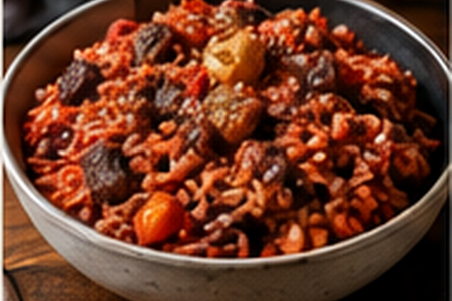

Gullah Red Rice
Long-grain rice cooked with tomato, aromatic vegetables and optional smoked meat until deeply seasoned but still fluffy.

About this dish
Red rice is a defining Lowcountry rice dish strongly associated with Gullah Geechee cooking. Tomato gives the grains their color while onion, pepper and smoked meat or fat build the savory base. The goal is not tomato risotto: each grain should remain distinct and carry the seasoning absorbed during cooking.
This version uses widely available long-grain rice and bacon as an optional smoked element. Family versions may use sausage, salt pork or no meat at all.
Rice knowledge carried across the Atlantic
The National Park Service describes Gullah Geechee culture as a distinct African American culture formed along the coastal Carolinas, Georgia and the Sea Islands by descendants of enslaved West and Central Africans. Rice cultivation became central to the Lowcountry economy, and plantation owners specifically sought enslaved people from West Africa's rice-growing regions because they already possessed sophisticated knowledge of cultivating and processing the crop.
Smithsonian Folklife programming likewise emphasizes the direct relationship between Gullah Geechee foodways and West African rice traditions. One-pot rice dishes such as red rice and perloo are not simply regional comfort foods; they carry histories of migration, enslavement, resilience and cultural continuity.
Gullah Geechee red rice varies by island, family and cook. This home recipe is an entry point, not a substitute for learning from Gullah Geechee cooks and cultural institutions.
Preparation notes
Excess rinse water changes the liquid ratio and can make the final grains gummy.
Cooking the tomato base before adding rice removes raw flavor and reduces excess water.
Once the rice is covered, trapped steam finishes the grains evenly. Check only near the end.
Ingredients & detailed method
Ingredients
- 1 1/2 cups long-grain rice
- 4 slices bacon, diced, optional
- 1 small onion, finely diced
- 1 small bell pepper, finely diced
- 2 garlic cloves, minced
- 1 1/2 cups crushed tomatoes
- 1 1/2 cups chicken stock or water
- 1 tsp smoked paprika
- 1/2 tsp dried thyme
- Kosher salt and black pepper
- Cayenne, to taste
Method
- 1.Rinse the rice. Rinse in several changes of cool water until the water is much less cloudy, then drain in a fine sieve for at least 5 minutes.
- 2.Render the bacon if using. Cook over medium heat until crisp. Transfer the pieces to a plate and leave about 2 tablespoons fat in the pot. Use neutral oil if omitting bacon.
- 3.Cook the vegetables. Add onion and bell pepper and cook 5–7 minutes. Checkpoint: they should be soft and glossy without deep browning.
- 4.Add aromatics. Stir in garlic, paprika, thyme, black pepper and cayenne for about 30 seconds.
- 5.Concentrate the tomato. Add crushed tomatoes and simmer 4–6 minutes. Checkpoint: the mixture should look thicker and slightly darker, with no watery ring around the edges.
- 6.Coat the rice. Stir in the drained rice for 1 minute so every grain is covered with the tomato mixture.
- 7.Add liquid. Pour in stock, season with salt and bring to a full boil while stirring once to prevent sticking.
- 8.Steam gently. Cover tightly, reduce heat to the lowest setting and cook 18 minutes without stirring.
- 9.Check the grain. Checkpoint: the surface should look dry, the liquid should be absorbed and a grain should be tender through the center. If still firm, sprinkle in 2 tablespoons hot water, cover and cook 3–5 minutes more.
- 10.Rest. Turn off the heat and leave covered 10 minutes. This lets steam redistribute and firms the grains enough to fluff.
- 11.Fluff and finish. Use a fork to lift the rice gently. Fold in crisp bacon if using and adjust salt before serving.